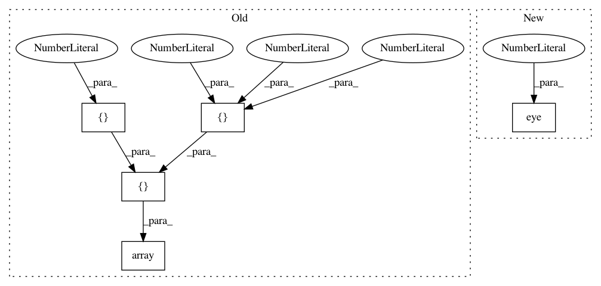

c7e318e6699c1e0048bf9278a951cb9029b59068,dipy/sims/voxel.py,,all_tensor_evecs,#Any#,108
Before Change
def all_tensor_evecs(e0):
Principal axis to all tensor axes
axes = np.array([[1., 0, 0], [0, 1., 0], [0, 0, 1.]])
mat = vec2vec_rotmat(axes[2], e0)
e1 = np.dot(mat, axes[0])
e2 = np.dot(mat, axes[1])
return np.array([e0, e1, e2])
After Change
Tensor eigenvectors.
axes = np.eye(3)
mat = vec2vec_rotmat(axes[2], e0)
e1 = np.dot(mat, axes[0])
e2 = np.dot(mat, axes[1])
return np.array([e0, e1, e2])
In pattern: SUPERPATTERN
Frequency: 3
Non-data size: 5
Instances
Project Name: nipy/dipy
Commit Name: c7e318e6699c1e0048bf9278a951cb9029b59068
Time: 2012-06-13
Author: stefan@sun.ac.za
File Name: dipy/sims/voxel.py
Class Name:
Method Name: all_tensor_evecs
Project Name: geomstats/geomstats
Commit Name: b0d0053b1f1738640fc99fba642c83af42d10b22
Time: 2018-02-02
Author: ninamio78@gmail.com
File Name: geomstats/special_orthogonal_group.py
Class Name:
Method Name: skew_matrix_from_vector
Project Name: geomstats/geomstats
Commit Name: e56ac771005d14feb0f6c217fc4e3e3dc70e2e85
Time: 2020-01-14
Author: opeltre@gmail.com
File Name: tests/test_matrices_space.py
Class Name: TestMatricesSpaceMethods
Method Name: test_mult